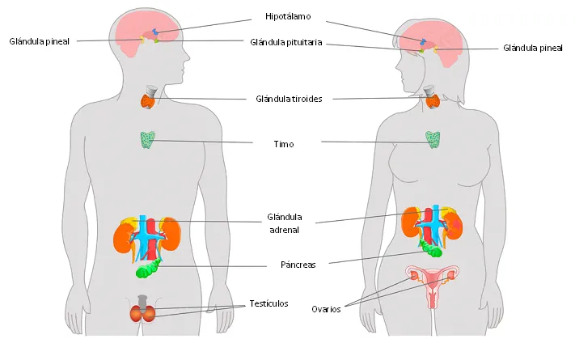

Introducción

El sistema digestivo es un conjunto de órganos encargados de procesar los alimentos que consumimos y convertirlos en nutrientes que el cuerpo puede absorber y utilizar para obtener energía y mantener sus funciones. Este proceso es esencial para nuestra supervivencia y bienestar.
Órganos del sistema digestivo
- Boca: Donde comienza el proceso de digestión. Los dientes muelen los alimentos y las glándulas salivales liberan enzimas para iniciar la descomposición.
- Esófago: Un tubo muscular que lleva los alimentos desde la boca hasta el estómago.
- Estómago: Aquí, los alimentos se mezclan con ácidos gástricos que continúan el proceso de descomposición.
- Intestino delgado: Es donde se absorben la mayoría de los nutrientes. Las enzimas digestivas adicionales descomponen los alimentos aún más.
- Intestino grueso: Absorbe agua y sales, y prepara los desechos para su eliminación.
- Hígado: Produce bilis, una sustancia que ayuda en la digestión de grasas.
- Páncreas: Libera enzimas digestivas al intestino delgado y regula los niveles de azúcar en la sangre.
Funciones de las partes del sistema digestivo

Boca
La boca es el punto de inicio del proceso digestivo. Los dientes muelen los alimentos para facilitar la digestión, mientras que las glándulas salivales liberan enzimas que comienzan a descomponer los carbohidratos.
Esófago
El esófago es un tubo muscular que transporta los alimentos desde la boca hasta el estómago. Utiliza contracciones musculares coordinadas, conocidas como peristaltismo, para mover el alimento.
Estómago
El estómago es un órgano muscular en forma de bolsa que continúa el proceso de descomposición de los alimentos. Los ácidos gástricos y las enzimas digestivas trabajan juntos para descomponer aún más los alimentos en una sustancia llamada quimo.
Intestino delgado
El intestino delgado es donde se absorben la mayoría de los nutrientes, incluidos los carbohidratos, proteínas, grasas, vitaminas y minerales. Además, las enzimas digestivas adicionales descomponen los nutrientes aún más para su absorción en el torrente sanguíneo.
Intestino grueso
El intestino grueso absorbe agua y sales de los desechos de la digestión. También alberga una comunidad de microorganismos beneficiosos conocidos como la flora intestinal.
Hígado
El hígado produce bilis, una sustancia que ayuda en la digestión y absorción de grasas. Además, el hígado tiene muchas otras funciones vitales, incluida la desintoxicación del cuerpo.
Páncreas
El páncreas libera enzimas digestivas al intestino delgado para ayudar en la descomposición de carbohidratos, proteínas y grasas. También secreta insulina y glucagón para regular los niveles de azúcar en la sangre.
Importancia de una alimentación equilibrada
Una alimentación equilibrada es esencial para mantener la salud del sistema digestivo y del cuerpo en general. Consumir una variedad de alimentos ricos en nutrientes proporciona los elementos necesarios para el funcionamiento óptimo de los órganos digestivos y el resto del organismo.